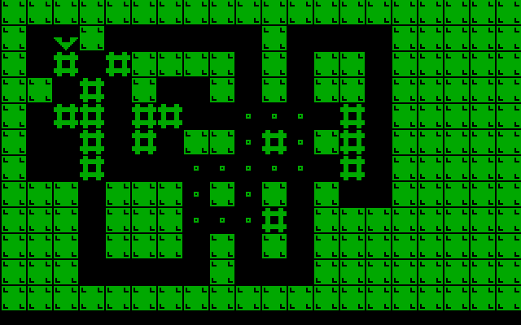
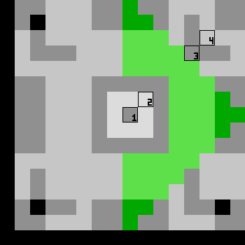

updated at 2021-04-10 by wojtek at bitologia.org (index)
Remake of the classic game from 1981 with as little code as possible.

Game is made in the mode 13h (320 × 200 × 256) and
each level (map) must fit in an array of 20 × 12 cells, each of 16 × 16 pixels.
Small margin of 8 pixels at the bottom is left for a future to display
number of moves and level's metadata.
There are only four elements: a cursor, box, slot (for a box) and riveted wall. Two movable objects, the cursor and box, are shaped so that they do not overlap with slots when going through. Graphics is intentionally monochromatic to follow the minimalistic style.
All collision conditions between the cursor, box and wall and also the number of filled slots is calculated instantly from data taken directly from the RAM of VGA. This roughly explains the localisation of rivets on the walls and the special form of boxes, slots and the cursor.

On the Fig. 2. all four elements are magnified (175/8 times) and superimposed. One readily sees that there are four pixels (other configurations are also possible but the anti-diagonal alignment does the job) which, if appropriately combined, can identify a given relation uniquely. For example:
[1]==0 and [2]==1 and [3]==1 then box is in slot [3]==0 and [4]==1 then cell is occupied by wall [3]==1 and [4]==1 then cell is occupied by box [4]==0 then cell is "empty" (empty from a box or cursor's perspective)
[edit 2021-05-11] actually this can be further simplified!
Note that the cursor (rotated by any angle: π/2, π, 3π/2) avoids these control spots perfectly.
That is all. The objective of the game is to push all boxes into slots. Space Bar reloads the map in case of failure and Escape returns to DOS.
Compiled using Turbo Assembler 2.0. Tested on DOSBox, 80386-DX33, P166-MMX and P133-S.
The source still can be compressed so that the main engine
(without LEVEL_DATA and ELEMENTs)
can be less than 469 bytes!
; wojtek[at]bitologia.org
;
; 2021-03-31 idea of the minimal sokoban game returns
; 2021-04-02 first attempt
; 2021-04-03 binary file with data and levels
; 2021-04-04 graphics design :)
; 2021-04-05 k/b module (what about sokoban on a torus?)
; 2021-04-06 full engine and 1st playable version!
; data merged with source
; 2021-04-07 code clean, debugging, simplification
; 2021-04-08 optimization
; 2021-04-09 optimization - engine (without data) has only 495B!
; 2021-04-10 optimization - engine (without data) has only 469B!
; -----------------------------------------------------------------------------
.model tiny
.code
.386
MAX_LEVEL equ 2 ; maximal level number - must coincide with LEVEL_DATA
org 100h
start: mov ax, 0013h
int 10h
mov ax, 0a000h
mov es, ax
next_level:
xor ax, ax
mov cx, 0ffffh
rep stosw ; clear screen
lea si, LEVEL_DATA
mov cl, cs:[level]
get_offset:
add si, 240d
loop get_offset
xor ax, ax
draw_map:
lodsb
or al, al
jz short skip_element
dec al
cmp al, 3
jg short not_cursor
mov cs:[cursor_position], ah
mov cs:[cursor_status], al
not_cursor:
call draw_element
skip_element:
inc ah
cmp ah, 240d ; level volume
jne short draw_map
main: mov ah, 1
int 16h
jz short kp
mov byte ptr cs:[key_pressed], ah
xor ah, ah
int 16h
call check_cursor_status
xor bp, bp
call check_slot
dec bp
jz short next_level
kp: cmp byte ptr cs:[key_pressed], 1 ; ESC
jne short main
mov ax, 0003
int 10h
mov ah, 4ch
int 21h
;------------------------------------------------------------------------------
check_slot:
mov bx, 320
mov cx, 20*12
xor di, di
check: cmp byte ptr es:[di+bx+8+7*320], 0 ; center of slot
jne short not_slot
cmp byte ptr es:[di+bx+9+6*320], 0 ; border of slot
je short not_slot
cmp byte ptr es:[di+bx+12+3*320], 0 ; box area
je short slot_not_filled
not_slot:
sub bx, 16
jns short CRLF
add di, 320*16
mov bx, 320
CRLF: loop short check
; if here then level completed!
mov bx, 1024
mov al, 0b6h
out 43h, al
mov al, bl
out 42h, al
mov al, bh
out 42h, al
in al, 61h
or al, 11b
out 61h, al
beep: hlt
hlt
in al, 61h
and al, 11111100b
out 61h, al
inc bp ; TODO: this is lousy, a FLAG must be used for this!
inc cs:[level]
cmp cs:[level], MAX_LEVEL
jne short slot_not_filled
mov byte ptr cs:[level], 0
slot_not_filled:
ret
;------------------------------------------------------------------------------
check_cursor_status:
cmp ah, '9' ; press space to reload level
je next_level
cmp ah, 'H'; 48h ; up
jne short p1
mov cl, 1
jmp short p0
p1: cmp ah, 'M'; 4dh ; left
jne short p2
mov cl, 2
jmp short p0
p2: cmp ah, 'P'; 50h ; down
jne short p3
mov cl, 3
jmp short p0
p3: cmp ah, 'K'; 4bh ; right
jne short ignore_other_keys
xor cl, cl
p0: cmp cl, cs:[cursor_status]
mov ah, cs:[cursor_position] ; set the cursor's orientation
mov al, cs:[cursor_status]
je short old_position
call draw_element
mov al, cl
call draw_element
mov cs:[cursor_status], cl
ret
old_position: ; move the cursor (with box) if possible
call draw_element
mov al, 5 ; box is the only thing (except cursor) that is movable
shl cl, 3
mov si, cx
mov ch, byte ptr cs:[cursor_data+si+6]
mov bx, cs:[cursor_data+si]
cmp byte ptr es:[di+bx+1], 0 ; wall
jne short s0
mov bx, cs:[cursor_data+si+2]
cmp byte ptr es:[di+bx+4], 0 ; box
je short b1 ; move only cursor
mov bx, cs:[cursor_data+si+4]
cmp byte ptr es:[di+bx+3], 0 ; is box blocked by box or wall?
jne short s0
mov ah, cs:[cursor_position]
add ah, ch
call draw_element ; remove box
add ah, ch
call draw_element ; draw box
b1: add cs:[cursor_position], ch
s0: mov ah, cs:[cursor_position] ; TODO: maybe no need to use AX?
mov al, cs:[cursor_status]
call draw_element
ignore_other_keys:
ret
;------------------------------------------------------------------------------
draw_element: ; ah=position, al=#element(offset)
push si
push ax
push bx
push cx
lea si, ELEMENT
xor cx, cx
mov cl, al
shl cx, 5
add si, cx
mov al, ah
xor dx, dx
xor ah, ah
mov di, 20d
div di
push dx ; store remainder
mov di, 320*16
mul di
mov di, ax
pop ax ; restore remainder
shl ax, 4
add di, ax
mov cx, 16d
load_: lodsw
push cx
mov cx, 16d
rotate: push ax
and ax, 1
shl ax, 1
xor ax, es:[di] ; get pixel
stosb ; put pixel
pop ax
ror ax, 1
loop rotate
add di, 304d
pop cx
loop load_
pop cx
pop bx
pop ax
pop si
ret
;------------------------------------------------------------------------------
level DB 0 ; enumerate levels from zero to simplify offset calculation
cursor_position DB ?
cursor_status DB ?
key_pressed DB 0
cursor_data DW -160*32-16, -160*32+320*3-16, -160*32+320*2-32, -1
DW -320*32, -320*29, -320*30-160*32, -20
DW -160*32+16, -160*32+16, -160*32+320+32, 1
DW 0000, 0000, 320*16, 20
ELEMENT DB 000h, 001h, 080h, 001h, 0c0h, 001h, 0e0h, 001h, 0f0h, 001h, 038h, 000h, 03ch, 000h, 03eh, 000h ; cursor
DB 03ch, 000h, 038h, 000h, 0f0h, 001h, 0e0h, 001h, 0c0h, 001h, 080h, 001h, 000h, 001h, 000h, 000h
DB 000h, 001h, 080h, 003h, 0c0h, 007h, 0e0h, 00fh, 0f0h, 01fh, 038h, 038h, 03ch, 078h, 03eh, 0f8h ; cursor
DB 000h, 000h, 000h, 000h, 000h, 000h, 000h, 000h, 000h, 000h, 000h, 000h, 000h, 000h, 000h, 000h
DB 000h, 001h, 000h, 003h, 000h, 007h, 000h, 00fh, 000h, 01fh, 000h, 038h, 000h, 078h, 000h, 0f8h ; cursor
DB 000h, 078h, 000h, 038h, 000h, 01fh, 000h, 00fh, 000h, 007h, 000h, 003h, 000h, 001h, 000h, 000h
DB 000h, 000h, 000h, 000h, 000h, 000h, 000h, 000h, 000h, 000h, 000h, 000h, 000h, 000h, 03eh, 0f8h ; cursor
DB 03ch, 078h, 038h, 038h, 0f0h, 01fh, 0e0h, 00fh, 0c0h, 007h, 080h, 003h, 000h, 001h, 000h, 000h
DB 000h, 000h, 000h, 000h, 000h, 000h, 000h, 000h, 000h, 000h, 000h, 000h, 080h, 003h, 080h, 002h ; slot
DB 080h, 003h, 000h, 000h, 000h, 000h, 000h, 000h, 000h, 000h, 000h, 000h, 000h, 000h, 000h, 000h
DB 038h, 038h, 038h, 038h, 0feh, 0ffh, 0feh, 0ffh, 0feh, 0ffh, 038h, 038h, 038h, 038h, 038h, 038h ; box
DB 038h, 038h, 038h, 038h, 0feh, 0ffh, 0feh, 0ffh, 0feh, 0ffh, 038h, 038h, 038h, 038h, 000h, 000h
DB 0feh, 0ffh, 0fah, 0efh, 0fah, 0efh, 0e2h, 08fh, 0feh, 0ffh, 0feh, 0ffh, 0feh, 0ffh, 0feh, 0ffh ; wall
DB 0feh, 0ffh, 0feh, 0ffh, 0feh, 0ffh, 0fah, 0efh, 0fah, 0efh, 0e2h, 08fh, 0feh, 0ffh, 000h, 000h
LEVEL_DATA DB 7, 7, 7, 7, 7, 7, 7, 7, 7, 7, 7, 7, 7, 7, 7, 7, 7, 7, 7, 7
DB 7, 0, 0, 0, 0, 0, 0, 0, 0, 0, 0, 0, 0, 0, 0, 0, 0, 0, 0, 7
DB 7, 0, 0, 0, 0, 0, 0, 0, 0, 0, 0, 0, 0, 0, 0, 0, 0, 0, 0, 7
DB 7, 0, 0, 0, 0, 0, 0, 0, 0, 0, 0, 0, 0, 6, 5, 6, 0, 0, 0, 7
DB 7, 0, 0, 0, 0, 0, 0, 0, 0, 0, 0, 0, 0, 5, 2, 5, 0, 0, 0, 7
DB 7, 0, 0, 0, 0, 0, 0, 0, 0, 0, 0, 0, 0, 6, 5, 6, 0, 0, 0, 7
DB 7, 0, 0, 0, 0, 0, 0, 0, 0, 0, 0, 0, 0, 0, 0, 0, 0, 0, 0, 7
DB 7, 0, 0, 0, 0, 0, 0, 0, 0, 0, 0, 0, 0, 0, 0, 0, 0, 0, 0, 7
DB 7, 0, 0, 0, 0, 0, 0, 0, 0, 0, 0, 0, 0, 0, 0, 0, 0, 0, 0, 7
DB 7, 0, 0, 0, 0, 0, 0, 0, 0, 0, 0, 0, 0, 0, 0, 0, 0, 0, 0, 7
DB 7, 0, 0, 0, 0, 0, 0, 0, 0, 0, 0, 0, 0, 0, 0, 0, 0, 0, 0, 7
DB 7, 7, 7, 7, 7, 7, 7, 7, 7, 7, 7, 7, 7, 7, 7, 7, 7, 7, 7, 7
DB 7, 7, 7, 7, 7, 7, 7, 7, 7, 7, 7, 7, 7, 7, 7, 7, 7, 7, 7, 7
DB 7, 0, 4, 7, 0, 0, 0, 0, 0, 0, 7, 0, 0, 0, 0, 7, 7, 7, 7, 7
DB 7, 0, 6, 0, 6, 7, 7, 7, 7, 0, 7, 0, 7, 7, 0, 7, 7, 7, 7, 7
DB 7, 7, 0, 6, 0, 7, 0, 0, 7, 0, 7, 0, 7, 7, 0, 7, 7, 7, 7, 7
DB 7, 0, 6, 6, 0, 6, 6, 0, 0, 5, 5, 5, 0, 6, 0, 7, 7, 7, 7, 7
DB 7, 0, 0, 6, 0, 6, 0, 7, 7, 5, 6, 5, 7, 6, 0, 7, 7, 7, 7, 7
DB 7, 0, 0, 6, 0, 0, 0, 5, 5, 5, 5, 5, 0, 6, 0, 7, 7, 7, 7, 7
DB 7, 7, 7, 0, 7, 7, 7, 5, 7, 5, 7, 0, 7, 0, 0, 7, 7, 7, 7, 7
DB 7, 7, 7, 0, 7, 7, 7, 5, 5, 5, 6, 0, 7, 7, 7, 7, 7, 7, 7, 7
DB 7, 7, 7, 0, 7, 7, 7, 0, 7, 0, 7, 0, 7, 7, 7, 7, 7, 7, 7, 7
DB 7, 7, 7, 0, 0, 0, 0, 0, 7, 0, 0, 0, 7, 7, 7, 7, 7, 7, 7, 7
DB 7, 7, 7, 7, 7, 7, 7, 7, 7, 7, 7, 7, 7, 7, 7, 7, 7, 7, 7, 7
end start